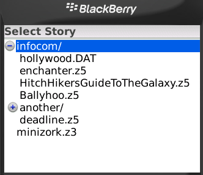
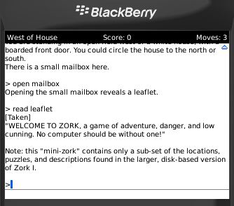

The Eclipse Project has released version 3.5 of the Eclipse platform as part of the Galileo Release Train. There are announcements and discussions all over the place, like
here
,
here
and
here
. The question is where is the love for the
Mobile Tools for Java
? The Galileo release marks the graduation of the
Mobile Tools for Java
project from incubation, providing a solid set of tools for JavaME development in Eclipse. The involvement from the various member companies has been excellent during the development of MTJ and transition from EclipseME. I have to admit that I’m a bit disappointed at the lack of coverage of the release. Pass the word that MTJ is
the
way to develop for JavaME.
The Pulsar project also saw an initial early release with Galileo. I will provide some background on this project in an upcoming post.
I’ve decided to dub this little hobby project
ZBerry
(BlackBerry Z-Machine Interpreter). I made some progress this weekend allowing stories to be selected from the file system via a new “library” view.

ZBerry Library Selection
I need to add some suspend/resume support before this thing becomes really very usable on a phone, but some progress anyway…
I was recently struggling to understand how to text alignment works with the BlackBerry Graphics drawText function. Having developed for MIDP on JavaME for a number of years, I found that the way the BlackBerry API works is a bit counter-intuitive until you understand how it works. I expected that this code would work, based on JavaME:
Read more…
I have long had a strange fascination with the old text adventure games aka
interactive fiction
. I remember hanging out with my buddy Gary when we were kids, working our way through various
Infocom
games. The stories were fun and the puzzles were always a good way to make you think.
A few years ago, I created a JavaME MIDP Z-Machine interpreter called
ZeeME
. This was an interesting little project at the time to learn my way around programming for these small devices, but actually using it was painful at best. Typing natural text using triple-tap just wasn’t enjoyable. With a QWERTY keyboard on my BlackBerry Bold, it seemed like this might be a good time to resurrect this project yet again.
I’ve made some progress in building this out, but there is still a very long way to go. Here’s a snapshot of the emulator running the game “Minizork”.

Watch here for more to come…
Over on Chris Aniszczyk’s blog, he
mentions
that the Eclipse Mobile Tools for Java and Eclipse Pulsar projects have passed the Galileo release review. Although Eclipse Mobile Tools for Java isn’t quite 1.0, it is getting very close. This is the culmination of the work I started in 2003 on the
EclipseME project
. When I started that little hobby project, I would not have dreamed that it would have more than 700,000 downloads from Sourceforge or become the base of the official
Eclipse Mobile Tools for Java
project.
Thanks to the help from Motorola and the other members of the Eclipse Mobile Tools for Java project, the EclipseME code has grown and matured far beyond what I could have done in my own free time. There are many more support options now available and users should find a much smoother environment. If you need any proof of the commitment from members of the MTJ development team, take a look at the developers
mailing list request
to begin work on the first service release beyond MTJ 1.0.
I’m looking forward to continuing my involvement with the MTJ project going forward both as a code committer and as a voice for the average mobile developer. I want to thank all of the users of EclipseME over the years for their continued support and urge you to make the jump to MTJ if you have not already. The final Galileo release is scheduled to be available on June 24th, but the versions available right now are pretty close to what you can expect at that time. The differences between this first MTJ version and the last EclipseME release make it a very worthwhile upgrade to your development environment.
I recently did a bit of fighting with the Macintosh pppd daemon to fix problems with Bluetooth tethering of my BlackBerry Bold. Downloads, installation details and more information can be found in
BlackBerry Bold PPPD Replacement
.
{kind=link}
{kind=link}